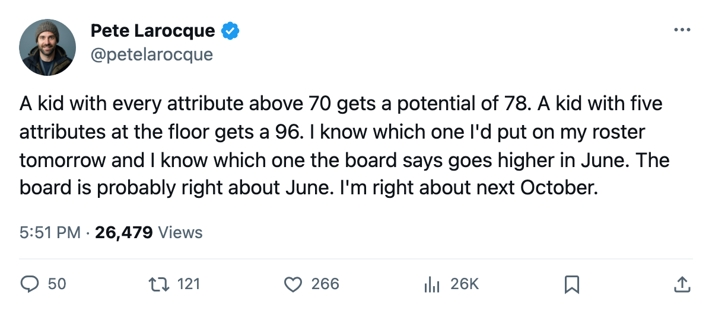
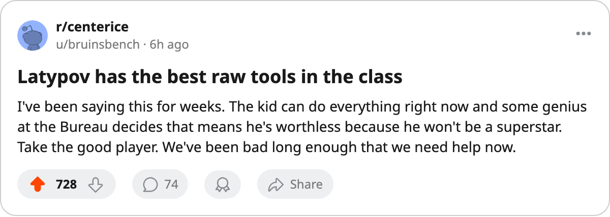

The Best Player in the 2006 Class Has a Potential Grade of 78. His Lowest Attribute Is 72.
Viktor Latypov is already better on the current grades than anyone in this draft. The Bureau says that's where his career peaks.
 Pete LarocqueScouting editor · The Prospect File
Pete LarocqueScouting editor · The Prospect File
The piece
The Junior Bureau puts 6 numbers on every prospect in the class of 2006. Tuomo Pirnes, the fourth-ranked skater by potential, has five of those six sitting at 50, the floor of the scale. That was the story here four days ago.
The other story is Viktor Latypov. His potential is 78. His lowest attribute is 72, on shot power. Every other number on his card reads 74 or higher. He is the only prospect in the Bureau's top 40 who has no attribute grade below 70.
That makes him the most skilled player in this draft class right now, by the Bureau's own measure. The Bureau also thinks he is nearly done developing. A GM has to settle between those two facts by June 8.
The Mirror
Pirnes and Latypov are the same class. Both born in 1986. Both will be 19 on draft day. The Bureau grades them as opposite problems.
Pirnes: potential 96, five attributes at 50, one attribute at 61 (checking). He is a raw prospect the Bureau believes will get to 96 someday. You take him with a top-5 pick because the ceiling is enormous and you have the years to wait.
Latypov: potential 78, zero attributes at 50, the weakest line on his card is a 72 shot power. He is a finished product the Bureau thinks will get slightly better and stop. You take him with a top-5 pick and hope you're not wasting it.
Here is every skater in the top 40 with no attribute below 60, ranked by potential:
| Prospect | Pos | Birth Year | Potential | SPEE | ACCU | SHPW | PASS | PUCK | CHKG | Lowest |
|---|---|---|---|---|---|---|---|---|---|---|
| Valeri Bunka | LW | 1987 | 96 | 61 | 69 | 70 | 62 | 71 | 81 | 61 |
| Karel Kotalik | C | 1987 | 91 | 64 | 68 | 73 | 65 | 74 | 84 | 64 |
| Daniel Lindgren | LW | 1986 | 90 | 68 | 71 | 66 | 67 | 71 | 76 | 66 |
| Viktor Latypov | LW | 1986 | 78 | 74 | 81 | 72 | 77 | 81 | 82 | 72 |
| Steffen Schmitt | D | 1986 | 78 | 69 | 60 | 74 | 74 | 71 | 73 | 60 |
| Kirk Farrell | C | 1986 | 76 | 70 | 74 | 77 | 64 | 68 | 73 | 64 |
Six skaters in the top 40 have no attribute at 50. Three of them carry a potential above 90 and were born in 1987, meaning they have more development time. Three carry a potential of 78 or below and were born in 1986, meaning the Bureau looks at them and says the growth curve has flattened.
The Age Tell
Latypov, Farrell, and Schmitt are all 1986-born. Bunka, Kotalik, and Lindgren split between 1986 and 1987, but the two 1987-born prospects (Bunka, Kotalik) carry the highest potential among this group. The pattern holds in the rest of the top 40: the 1987-born players average a higher potential grade than the 1986-born players, and the 1988-born pair (Simon Montador at 86, Kari Latvala at 74) are younger still with the class's two youngest birth years.
The Bureau is pricing time. A 1986-born player with attributes already in the 70s has less room to grow than a 1987-born player with attributes in the 60s, even if the older player is better today. Whether it holds up depends on whether you value the ceiling or the floor.
What the Bottom Feeds Have
 Phoenix Coyotes holds the worst record in the league at 13 points through 22 games. They own 5 picks in the 2006 draft, including their own first. A rebuilding club with the worst record has the most incentive to gamble on a potential-96 player with five floor grades, because they have years to wait for him to arrive.
Phoenix Coyotes holds the worst record in the league at 13 points through 22 games. They own 5 picks in the 2006 draft, including their own first. A rebuilding club with the worst record has the most incentive to gamble on a potential-96 player with five floor grades, because they have years to wait for him to arrive.
 Colorado Avalanche owns 8 picks across five rounds, the most of any club, including picks from
Colorado Avalanche owns 8 picks across five rounds, the most of any club, including picks from  Detroit Red Wings and
Detroit Red Wings and  Tampa Bay Lightning. That volume gives them the luxury of taking a high-potential raw prospect early and a polished player like Latypov later. A club with 8 shots at this draft doesn't need to resolve the argument between ceiling and floor. They can take both.
Tampa Bay Lightning. That volume gives them the luxury of taking a high-potential raw prospect early and a polished player like Latypov later. A club with 8 shots at this draft doesn't need to resolve the argument between ceiling and floor. They can take both.
 Edmonton Oilers holds 5 picks, 22 points in 22 games. They are in the same rebuilding window as PHX but with less draft capital to spend on the gamble.
Edmonton Oilers holds 5 picks, 22 points in 22 games. They are in the same rebuilding window as PHX but with less draft capital to spend on the gamble.
The Pick
I'd take Latypov. A 78 overall with no attribute below 72 is a player who contributes on a middle-six line within two seasons. A 96 potential with five attributes at 50 is a player who contributes at all if the development plan works and the player stays healthy and the coaching staff has the patience. The first bet is shorter. The second one pays more when it hits. But I have seen enough 96-potential players with floor attributes stall at 72 overall in the minors to know that the shorter bet is the safer one when you are drafting with a top-10 pick and your club is already bad enough to need help next year.
The Bureau disagrees. The Bureau has Pirnes fourth and Latypov 28th. That's the call. I'll watch what the June board does with it.

